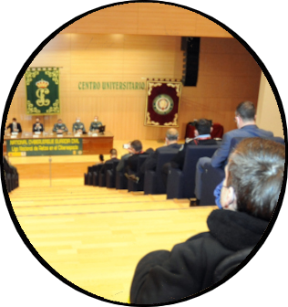

Soy Adrián Gordo, me dedico al desarrollo de software.
¿Qué es lo que más me motiva? Hacer casi cualquier cosa que aparezca en una pantalla, una web, una aplicación, un videojuego. Todo lo que sea interactivo y pueda darle a los botones.
He desarrollado varios proyectos en C y Java, en el ámbito web con HTML, Javascript y CSS3, y en videojuegos con C++.
No me quedé ahí, en el Trabajo Fin de Grado me interesé por la Inteligencia Artificial, y mediante Python realicé una herramienta para el estudio de las emociones en los videojuegos.

Luego cursé el Máster en Desarrollo de Software para Dispositivos Móviles, adquiriendo conocimientos en Swift, Android Studio y Unity. Además, experimenté con el reconocimiento de voz en un videojuego móvil como Trabajo Fin de Máster.
Poco después, me interesó el ámbito de la Ciberseguridad, presentándome a la National CyberLeague y llegando a la final con mis compañeros de equipo.